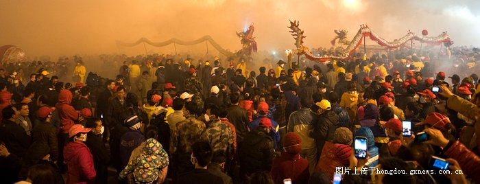
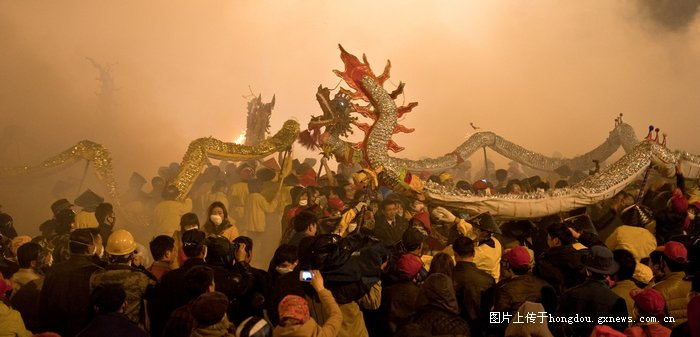
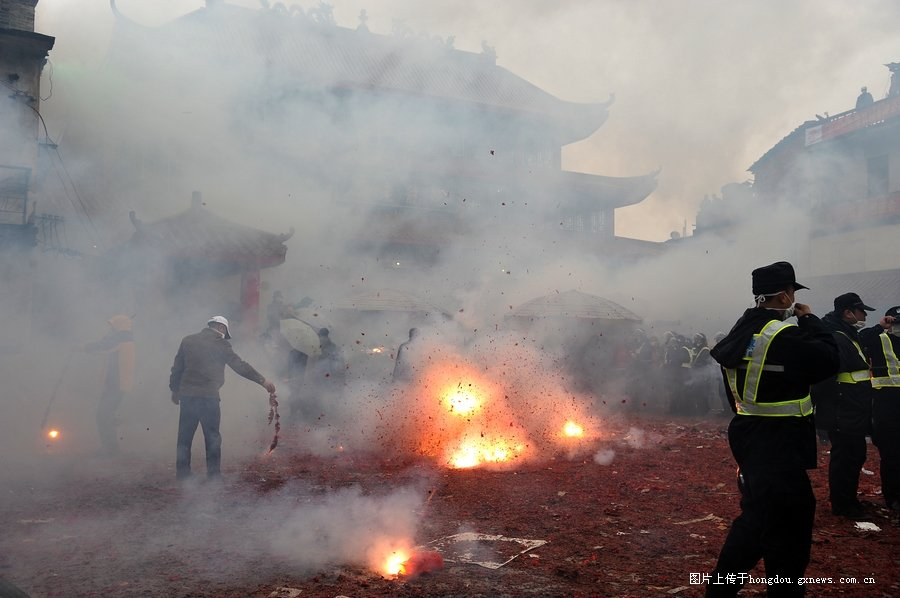
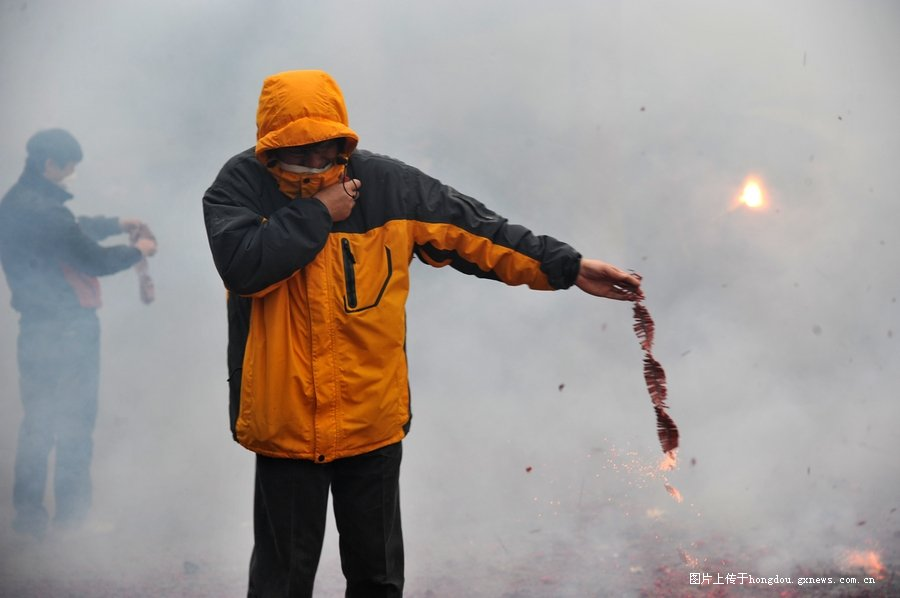
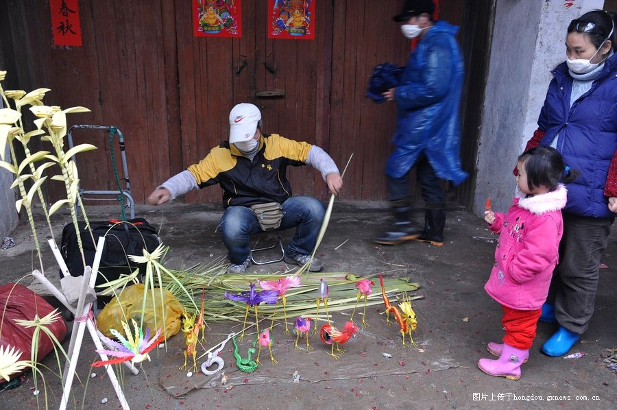
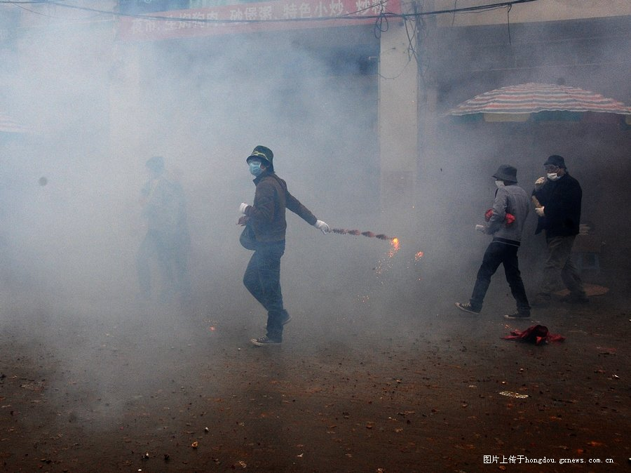
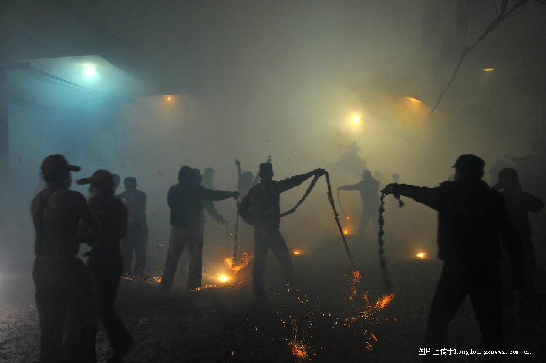
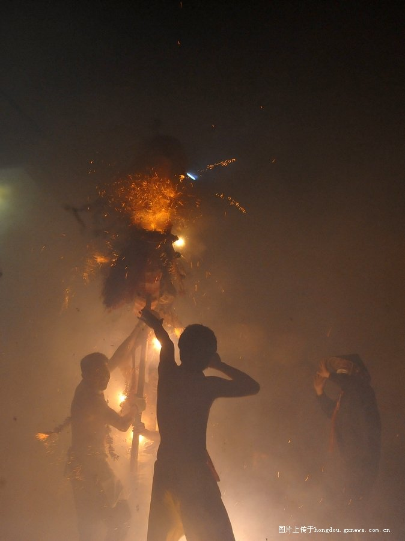
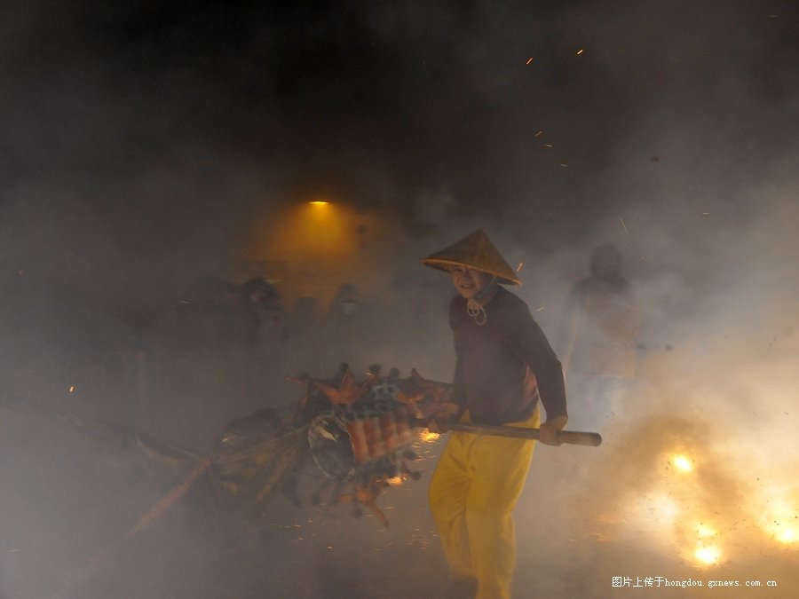
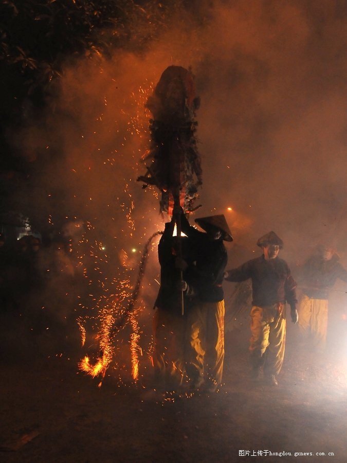

您听说过吗？在中国广西宾阳县，每年农历的正月十一都要举行一个壮、汉民族文化融合共生的综合性民族民间节庆--炮龙节，这一独具特色的民间习俗活动热烈、刺激、参与性强，并带有丰富的中国传统文化内涵，被喻为“中国狂欢节”。炮龙节可是在国家非物质文化遗产目录上榜上有名的。今天的节目我们邀您一起体验这一“中国狂欢节”。
今天是农历正月十一，我现在是在宾阳县的炮龙老庙为您报道。这里是炮龙节活动最传统、最热闹的地方之一。晚上的六点五十八分，这里要举行舞龙前传统的开光仪式。现在这里人潮涌动、人声鼎沸，很多人已经按耐不住开始燃放鞭炮为今晚的狂欢盛宴热身了。
记者：“你好，请问这开光仪式是怎么回事啊？”
群众：“画龙点睛嘛，一开光，这条龙就活了，就有灵气了，舞起来很漂亮。卢圩老街有两条龙是白胡子的，是老龙，你注意看，别的龙都是红色的胡子。为了表示尊敬，一定要让这两条老龙先开光。你看，那个老人正用鸡血去点龙的眼睛，点了以后呢，蒙住龙眼睛的布就揭开了，这条龙就有生气了。马上两条老龙就要带着所有的龙起舞，整个狂欢就开始了。”
晚上7点，宾阳县宾州古城锣鼓喧天，鞭炮齐鸣，顷刻间，百条神龙游入炮火中，在大街小巷欢腾舞动。炮龙所经之处，火把挥舞，人们纷纷拿出成串的鞭炮向炮龙狂轰滥炸。顿时，空气中弥漫着浓烈的硝烟味，只听到连绵不绝的鞭炮声，几米开外便已看不清人影。一个激情的狂欢夜拉开拉了序幕。
炮龙节，俗称“舞炮龙”，它不但是古老、吉祥、喜庆的地方传统民间习俗，而且是非常具有中国特色和民族特色的地方性现代狂欢节。据历史考证，这种习俗起源于宋朝，至今已有1000多年的历史。
传说宋朝的时候，当地有个叫侬智高的人聚众造反，驻兵在离宾阳数十里的昆仑关。朝廷派名将狄青前来平叛。狄青为了迷惑敌人，命令士兵和当地居民舞狮舞龙放鞭炮，佯装庆祝节日，自己带着数千精兵偷袭敌营，一举拿下了昆仑关，平定了叛乱。后来，舞龙活动被保留了下来，并逐渐演变成今天的舞炮龙。
按照惯例，宾阳炮龙节在每年农历正月十一晚上七点开始，风雨无阻。舞炮龙时队伍前面有龙灯队、锣鼓队开路，家家户户开始放鞭炮，鞭炮不停，炮龙不能离开。舞龙的人毫不畏惧鞭炮轰炸式燃放，大多赤膊上阵，任炮竹在身边爆响。舞龙者认为，被鞭炮炸得越多，来年的好运就越多：
“舞龙队员一：被炸得越伤，今年就越旺。
舞龙队员二：习惯了，我大概12岁开始耍了。我耍了40多年了，准备舞到七十岁、八十岁。”
传说，炸炮龙可以带来好运。当地群众家家户户都备足了几十万响甚至上百万响的鞭炮。有的将鞭炮挂在竹竿上，在炮龙上空挥舞；有的手持串串鞭炮，往龙头和龙身上抛；还有的爬到楼上燃放，对炮龙来个空中轰炸。炮龙就在这大街小巷冲天火光和巨响中翻腾起舞，叩头送福。这不，中和街的一户伍姓人家，从三楼悬挂了十几串鞭炮同时燃放，男主人手里还挥舞着几串鞭炮在炮龙身边来回穿梭：
“往炮龙上炸，炸得越多的话，来年更加顺畅。”
炮龙身上的每一件东西都代表着吉祥如意，捋下几丝龙须，系在家畜栏上，能求得家畜无病无瘟。最吉祥当属取得龙珠了。瞧瞧，龙在炮光中游舞时，人们纷纷挤到回廊下，伺机从龙的肚皮下穿行，顺便扯下鳞片或者胡须。传说钻了龙肚能带来一年的吉祥如意。钻龙肚不仅给人一种在炮声火光中穿行的刺激感，更寄托了人们对美好生活的向往。随着宾阳炮龙节影响力的不断扩大，许多外地游客都慕名而来，体验这一独具特色的狂欢活动：
“群众一：钻炮龙，摘龙鳞，摘得越多，赚得越多，可以带来好运气。
群众二：希望自己能够一切顺心吧，父母身体健康。
外国友人：Great！Great！It's festival！”
炮龙节上所舞的炮龙比一般常见的舞龙大得多，短的有七节，长的有十一节，龙身长约三四十米，龙头和龙尾由竹篾扎制，用砂纸装裱，龙身由麻绳串联，用彩布包裹而成。别小看了扎龙的技艺，这可是一门传统绝活呢。宾阳县芦圩镇三联街炮龙制作老艺人邹玉特扎制的炮龙以威风、漂亮、形态独特而闻名广西：
“不管谁来学，我都教他。不让扎龙的传统失传。”
尽管现场炮火连天，但由于当地政府的安全措施到位，因此这一活动沿袭至今没有出现过重大火灾、爆炸等事故。千百年来，这一古老的民间习俗活动隆重、热烈，具有广泛而深厚的群众基础及民间影响力。
广西宾阳县民间炮龙艺术协会秘书长张云真：
“我们宾阳的炮龙啊，有很深的文化内涵。它主要是四个“求”，第一个是求乐，通过舞炮龙，全城欢乐，彻夜狂欢；第二个是求和，和谐的和，和气的和；第三个“求”是求安，平平安安，所以舞炮龙呢，也是为了祈求来年太平、平安；最后一个“求”是求旺，丁财两旺。”
凌晨两三点钟，满城的炮竹声开始渐渐稀疏。当龙舞至街尾，仅剩下骨架和筋了。这时由族中长者指挥人们燃起火堆，奏响八音，把龙投进火中，“送龙归天”。至此，舞龙就算结束了。
火堆燃起，人们就着那堆熊熊烈火，架起一口大锅下了水、米、碎肉、佐料等熬一大锅粥犒劳舞龙的勇士。各家各户的人们和游客也纷纷来分享“龙粥”，据说喝了龙粥能消痛去病。这时天也大亮了，人们在欢腾的气氛中度过了一个狂欢的夜晚。
炮龙节已经于2008年被列入国家第二批非物质文化遗产名录。如今，宾阳县已经设计创作了炮龙节服装、饰品、旅游纪念品，并打造了一系列宾阳美食品种，建设了一批集科教、娱乐、展演为一体的文化设施，由炮龙带来的文化、旅游、经济一体化建设正在推进。
广西宾阳县旅游局局长白永才：
“炮龙节被列入国家级非物质文化遗产以后，对宾阳文化旅游业的发展来说是一个新的起点，从此就作为宾阳的一个最好的最靓的旅游名片。我们会以炮龙节为切入点，继续加大投入，把我们的文化旅游业发展得更好。”
怎么样，这“中国狂欢节”--炮龙节够热闹、够刺激吧？里边还有很多中国传统文化的内涵呢。欢迎您明年正月十一来广西宾阳亲身体验这一独具壮乡特色的节庆。









